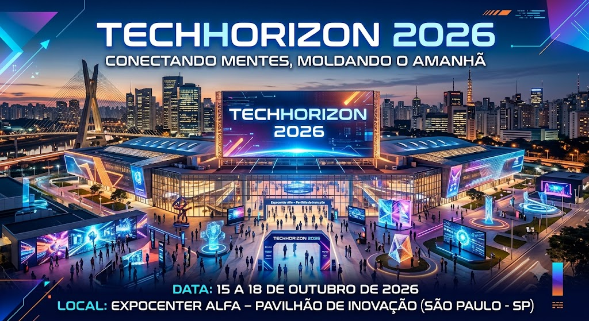

TechFuture 2026
"Conectando mentes, moldando o amanhã."
Bem-vindo à TechFuture 2026, o maior ponto de encontro de tecnologia e disrupção do país.
Durante quatro dias, reuniremos mentes brilhantes, startups revolucionárias e as principais tendências em inteligência artificial, robótica e biotecnologia.
Prepare-se para vivenciar experiências imersivas, painéis exclusivos e um networking que vai transformar o seu futuro.
O amanhã começa aqui.
Data: 15 a 18 de Outubro de 2026
Local: Expocenter Alfa – Pavilhão de Inovação (São Paulo - SP)

Motivos para participar:
Conecte-se com mais de 5.000 profissionais, investidores e líderes que estão ditando as regras do mercado global.
Assista a demonstrações exclusivas de Inteligência Artificial e Robótica antes que elas cheguem ao mercado tradicional.
Todos os participantes que completarem a trilha principal receberão um certificado digital exclusivo da feira.
Aprenda diretamente com os maiores nomes da tecnologia em painéis focados em soluções disruptivas para o ecossistema atual.
Inscreva-se aqui
Siga para a próxima página